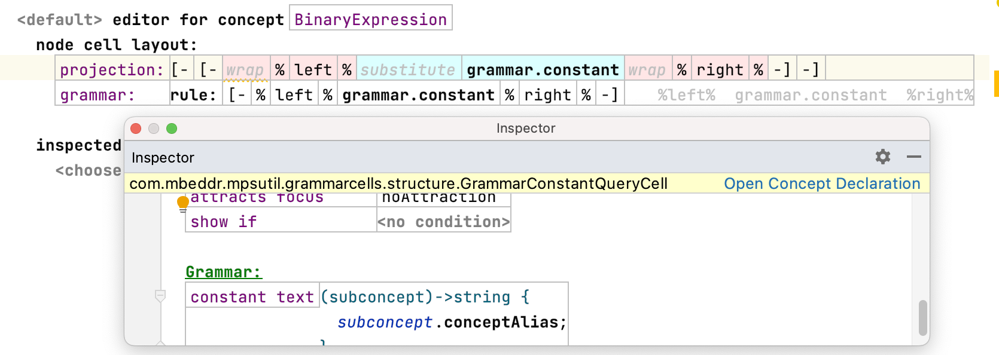
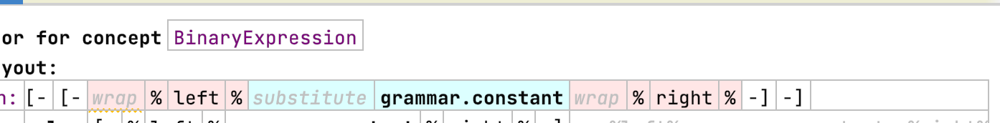

Grammar Cells
Language Namespace : com.mbeddr.mpsutil.grammarcells
Grammar Cells are an alternative approach to the MPS transformation language for declaratively specifying textual notations and their interactions for the MPS editor:
The following editor cells are available:
grammar.flag
A cell that represents a boolean flag. It can be used for boolean properties. The creation of the node is triggered when the matching text is entered (substitution). When the cursor is placed at the right position in the editor, the text can also be entered when the node already exists. In this cases, the text of the flag is shown in the editor and the boolean property is set (side transformation). The flag can be deleted with the normal MPS delete shortcuts.

Supported properties
- text: the text to match
- inverted: invert the semantic of the boolean flag (for example: entering the text changes the boolean flag to false)
- substitute condition: activate substitutions only when a custom condition is met
- side transform condition: activate side transformations only when a custom condition is met
- do not generate node substitute action: disable the substitution action completely
- description: the text that's shown in the code completion menu on the right side
grammar.constant
A dynamic constant text: this cell supports displaying dynamic text similar to the read only model accessor. It's most popular use case is as the alias cell for the operator of an expression such as a binary expression.

grammar.optional
A cell that supports entering an optional text to add an optional containment link of a node such as an optional child. The same way the grammar.flag cell works, node substitutions and side transformations are supported.
Supported properties
- transformation text: the text that must be matched. When the optional cell contains a collection cell, it's assumed that the first cell is a constant cell and its text is used as the transformation text.
- generate insert action: TODO
- post process: a function that's executed after the invocation of the side transformation/node substitution.
- description: a text that's shown in the code completion menu on the right side
grammar.wrap
A cell that lets you enter a child in a context where a parent is expected (e.g. enter the type of a variable declaration to create the declaration itself). The editor cell of th child is wrapped and the instantiation of the child is triggered. It can be used for containment links of children with mandatory (1) or optional (0..1) cardinality.
Supported properties (side transformations)
- condition: the trigger condition of the side transformation (default: true)
- remove: a list of concepts where the side transformation should not be added
- left text: the text of the left side transformation
- right text: the text of the right side transformation
- post process: a function that's executed after the invocation of the side transformation
Supported properties (node substitution)
- condition: the trigger condition of node substitution
- focus wrapped: set the focus to the newly created node (default: false)
- post process: a function that's executed after the invocation of the side transformation
- description: the text that's shown in the code completion menu on the right side
grammar.substitute
a cell that surrounds a constant cell to support substitution of the underlying concept with
another one. When there's a need to customize the completion menu, use the cell grammar.nodeSubstitution instead.
Supported properties
- description: a text that's shown in the code completion menu on the right side

grammar.brackets
A cell for implementing brackets such as braces or parenthesis. The opening and closing symbols must be provided. You can enter the opening symbol and then the closing symbol or vice versa to create a new instance of the concept that uses this cell e.g. 1+23 -> (1+23 -> (1+2*3). The PlusExpression is now surrounded by a ParenthesesExpression.
grammar.rules
Grammar cells can be surrounded by these cells to handle precedence and associativity. Structural changes in the cell trigger linearization, parsing, and reshuffling of the AST (more info can be found in the paper). The contained cell structure will be processed using the built-in parser. In the properties of this cell, the subconcept can be referenced by the variable with the same name.
Supported properties
- left associative: enable left associativity
- priority: the precedence of this concept.
- grammar.splittable: this cell wraps a child whose value can be split by typing specific characters. There
are builtin tokenizers for number literals and strings. Don't forget to define a property constraint. The tokenizer is
only invoked if the entered text isn't a valid property value. Example:
12-> type "+" between the two numbers -> the node gets transformed into a plus expression:1 + 2.
General notes
The side transformations are implemented with custom concept in this language: grammar.sideTransform0, grammar.sideTransformation,
grammar.sideTransformation3, and SideTransformationCell4. They can be used instead of the MPS transformation language
when the provided cells don't handle a specific scenario.